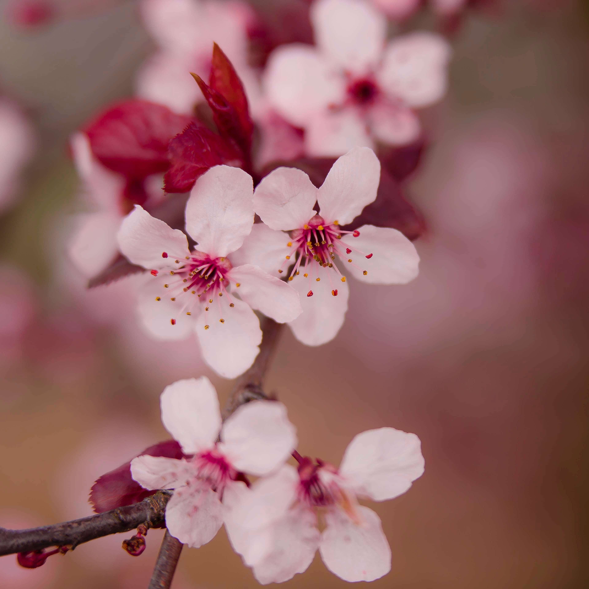
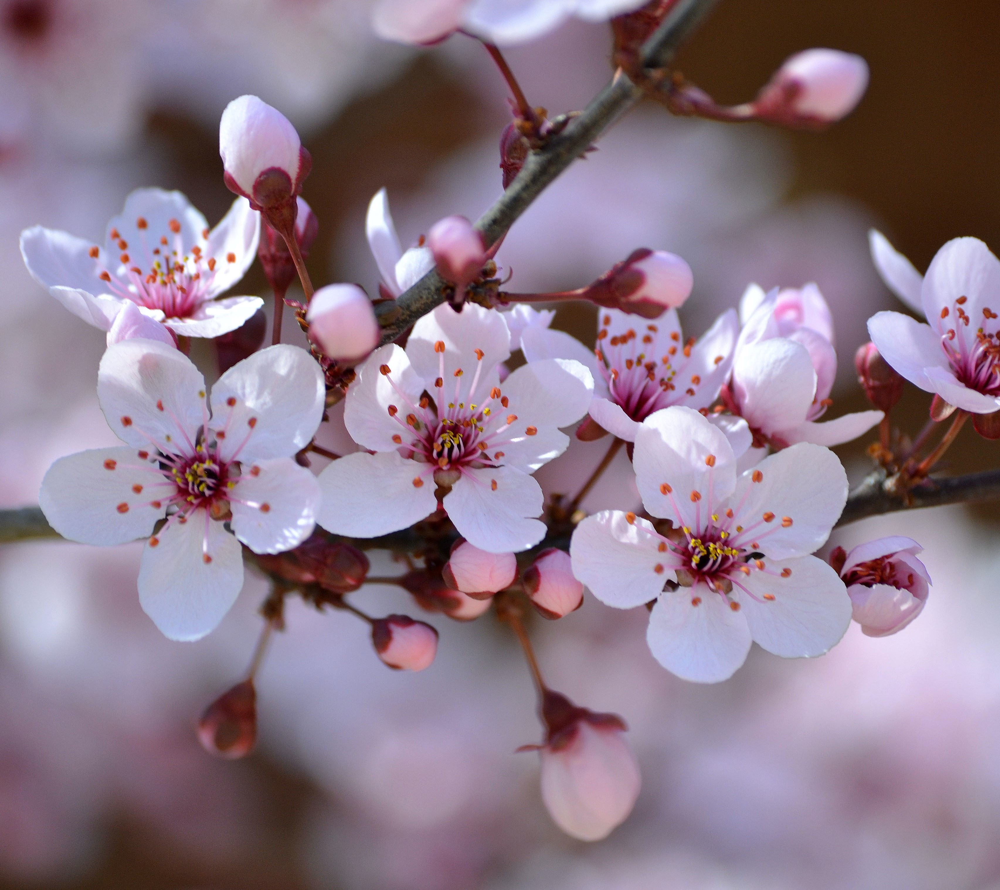
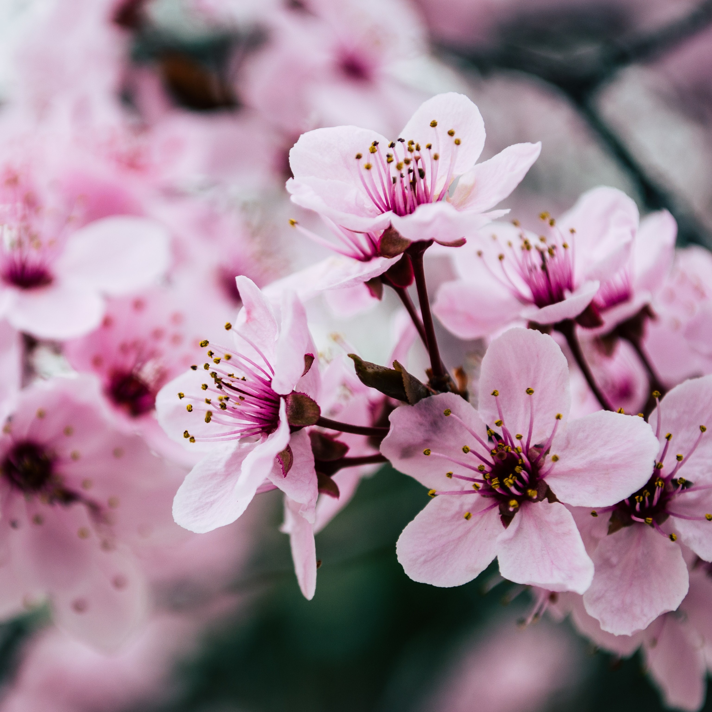

Hanami, czyli podziwianie urody kwiatów, w szczególności kwitnących kwiatów wiśni, to kilkusetletnia tradycja stanowiąca jeden z ważnych elementów japońskiej kultury. To wyjątkowy czas, kiedy Japończycy obchodzą początek wiosny i cieszą się kwitnieniem ponad stu gatunków drzew wiśniowych, różniących się kolorami, liczbą płatków, liśćmi i kształtem pnia.
Kwitnienie wiśni trwa od jednego do dwóch tygodni, zazwyczaj w marcu. - Hanami, zgodnie z filozofią buddyjską, przedstawia życie człowieka. Hanami jest krótkie i pokazuje, że bardzo szybko osiągamy pewien rozkwit, ale też błyskawicznie tracimy życie. Dlatego trzeba cieszyć się chwilą tu i teraz, bo jutra może nie być
Ume, czyli kwitnąca śliwka
Większość z nich ma kwiaty, które składają się z pięciu płatków i są w kolorystyce od białej, aż po ciemny różowy.Jedną z najpiękniejszych odmian jest shidare- ume, czyli śliwka płacząca. Charakteryzuje się pięknymi wiszącymi gałęziami, które obrośnięte są kwiatami, co daje cudowny efekt.
 Sakura- japońska wiśnia
Istnieje wiele odmian wiśni. Do najpopularniejszych należą takie jak: yama – zakura (posiada bladoróżowe, cienkie płatki), shidare - zakura (inaczej płacząca wiśnia) czy yae – zakura (charakteryzuje się dużymi, różowymi płatkami). Japończycy pokochali najbardziej Somei Yoshino - jest to drzewo o drobnych, białych kwiatach, które bardzo szybko opadają, jeszcze zanim rozwiną się liście, dlatego Wiśnia wydaje się całkowicie biała. Odmiana ta jest powszechnie kojarzona z kwitnącą wiśnią.